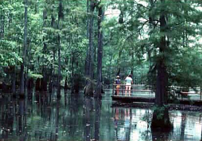
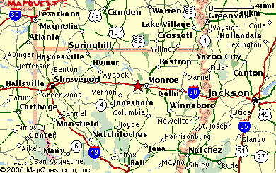
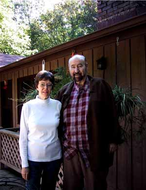

| Tom was born (17th December, 1930) and raised in Cheniere, Louisiana. According to Tom, Cheniere is pronounced "shenny" instead of "shenny-aire". Tom comments on the above photo:
Cheez! You even dug up a picture of Lake Cheniere!
When I was a kid growing up, that thing was not dammed up yet, and so
it
consisted of lots of swamp land plus three lakes: Puckett Lake,
Middle
Lake, and Little Lake. Little Lake was very difficult to get to,
and only a
few of the folks either knew of it or bothered. But that was
where the
gators raised, and there was a beaver dam. There were wolves,
some bears,
and a few panthers in that region. Lots of scrapes in that
wilderness when
a youngster. I often spent more time in the woods than out of
them in those
early days.
Now of course all three of those lakes are under more water and just
one big
lake called Cheniere Lake.
Lots of fond memories when I saw that picture. |


Tom and Doris at home in Huntsville, Alabama